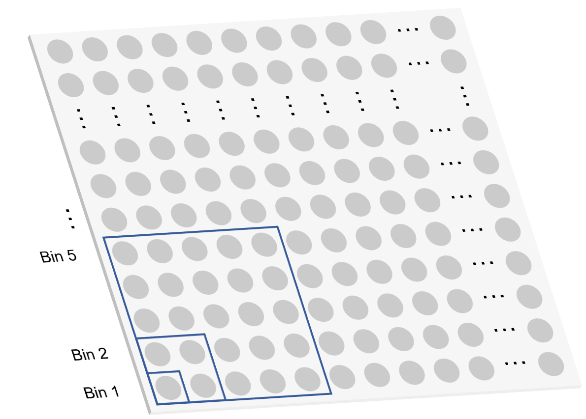

![]()
快速开始
StereoMap 是什么?
StereoMap 是一个 0 代码的桌面端软件，支持 Stereo-seq 数据分析及交互式的可视化。它通过解析时空芯片测序数据中的空间条形码，还原每个生物分子在组织中的空间定位和表达水平，分析单个或者多个基因在原始切片中的分子表达，实现亚细胞分辨率的可视化，并深入发掘潜在的生物学意义。
在 Stereo-seq 数据分析工作流程中，上游及下游的分析步骤中都会用到 StereoMap。

在上游分析中，StereoMap 可以提供：图像 QC 小工具，评估图像是否可以运行 SAW 的全自动分析流程；图像处理模块，用户可以对图像做手动处理后接入 SAW 。在下游分析中，StereoMap 可以提供交互式可视化和数据探索的功能。
- 可视化指南：探索 Stereo-seq 数据的关键模块，您可以交互式地研究组织内不同 bin 或者 cell 下的特征表达分布情况。此外，它可以支持图像或多组学数据一同或并排展示，为下游分析提供更多参考信息。
- 图像处理指南：图像处理的核心模块，您可以手动将图像与表达矩阵对齐，也可以使用图画工具编辑图像的 Mask 或者导入第三方工具生成的 Mask，手动操作完成可以将手动后的文件输入到 SAW 做后续分析。
- 小工具指南： 图像处理和 Stereo-seq 数据集所需的分析小工具。
- 图像质控- Image QC：用于评估显微镜图像的质量，确认在 SAW 中是否可以进行自动分析。
StereoMap 的输入文件
如下展示了图像处理和可视化模块需要用到的显微镜图像文件和 SAW 输出的文件。
可视化输入文件
下载并解压缩 SAW 输出的压缩包文件(visualization.tar.gz)，将会找到一个.stereo的清单文件，用户可以直接使用该清单文件打开可视化的数据，它包含了 SAW 输出的visualization.tar.gz 文件中用于可视化展示的文件路径映射信息。在使用.stereo的清单文件打开可视化的数据时，请您务必遵循如下规则：
- 默认情况下，可视化展示的所有文件与清单文件都在相同的目录路径中进行管理，强烈建议保持 SAW 输出的原始目录的文件结构。如果某个文件被移动到另一个位置或文件名已更改，请切记一定要修改清单文件中对应的文件路径。
- 可视化模块的目录中必须至少有一个基因表达（矩阵）文件（
.gef）或者一个图像金字塔文件（.rpi）可用。
| 文件扩展名 | 描述 |
|---|---|
.stereo | 是 JSON 格式的清单文件，包含实验信息、流程信息、基本的分析统计信息及 SAW 输出的图像和空间表达矩阵的映射信息的可视化文件。 解压 SAW 输出的压缩包文件( |
.gef | 用于可视化的基因表达（矩阵）文件，是 HDF5 格式。包含每个 spot 点的每个基因的 MID 的个数。Spot 点是固定大小的正方形形状，基因在每个 spot 点的表达量在该正方形中的累计加和。默认情况下，可视化的.gef文件包含 bin1、bin5、bin10、bin20、bin50、bin100和 bin200的点。 |
.cellbin.gef | 用于可视化的细胞特征的基因表达（矩阵）文件，是 HDF5 格式。它包含每个细胞的面积和空间位置，每个细胞中每个基因的 MID 的个数以及每个细胞所属的类群信息。在 仅适用于SAW运行有图的流程 |
.rpi |
可以在 StereoMap 的可视化模块打开图像数据。 |
<SN>*.bin<N>_<leiden_res>.h5ad | .h5ad文件以 AnnData 文件格式存储空间转录组或蛋白组的聚类信息，每一个<SN>.bin<N>_<leiden_res>.h5ad的文件只允许存储一个 bin 大小的分析结果。在生成的文件中，<SN> 代表 Stereo-seq 芯片序列号，<N> 代表 bin 大小，<leiden_res> 代表 Leiden 的分群颗粒度。在 SAW 标准分析中，默认的空间聚类分析使用的 binsize 为 200，Leiden 分群颗粒度为 1.0 。如果*后接的是.protein，表示聚类结果是根据蛋白矩阵得到。 |
<SN>*.cellbin_<leiden_res>*.h5ad |
在生成的文件中， SAW的标准分析流程中只有输入图像数据才会生成该文件，因细胞的位置信息是从显微镜的图像中获取的。 |

{kind=link}
{kind=link}
{kind=link}
图像处理输入文件
SAW 嵌入了自动的图像处理算法，用于图像拼接（小图 FOV 拼接成大图）、组织分割、细胞分割及识别 Stereo-seq 芯片上的轨迹线（tracklines），可将图像与具有相同轨迹线的特征表达矩阵对齐。对于组织/细胞边界模糊或者算法无法自动检测到轨迹线的数据，可能需要您手动圈选组织/细胞轮廓或者对齐。
图像处理模块提供手动处理图像的一系列操作，主要包含手动圈选组织/细胞区域、导入第三方分割工具的Mask 结果以及手动将图像与特征表达矩阵对齐等功能。手动图像处理输入的数据包括：基于显微镜拍摄的原始 TIFF 大图图像或者运行 SAW 自动图像算法后的数据。
| 文件扩展名 | 描述 |
|---|---|
.tar.gz | 存储原始的显微镜图像及图像质控的信息。
|
.tif 或者.tiff | TIFF 格式的图像数据。 显微镜输出的大图。 |
.stereo | JSON 格式的可视化清单文件，包含 SAW 自动分析的图像结果文件及表达矩阵文件。
|
图像处理的预期结果可能依据输入的数据会存在差异，更多详情可参考：图像处理指南。